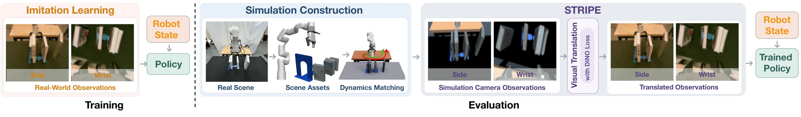
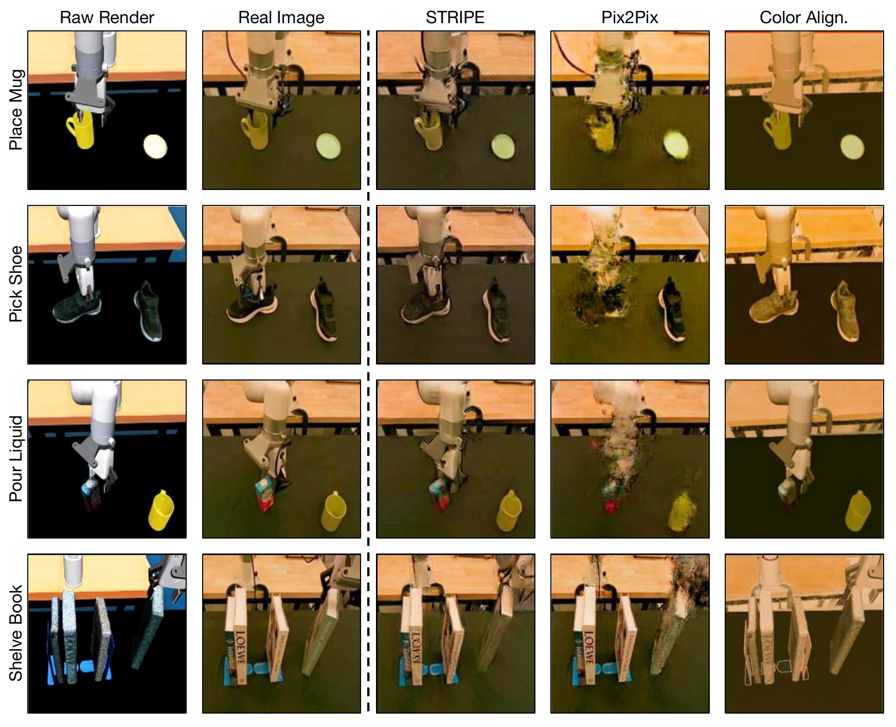
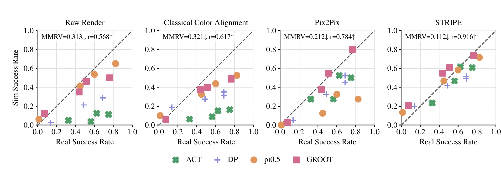
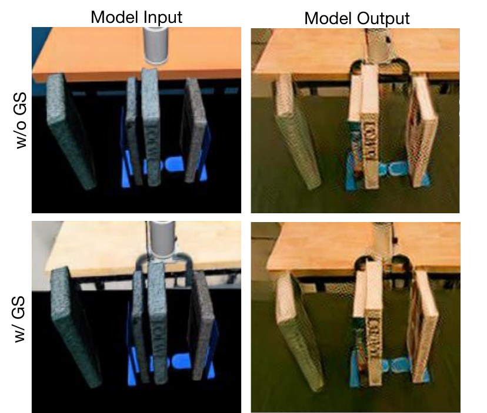
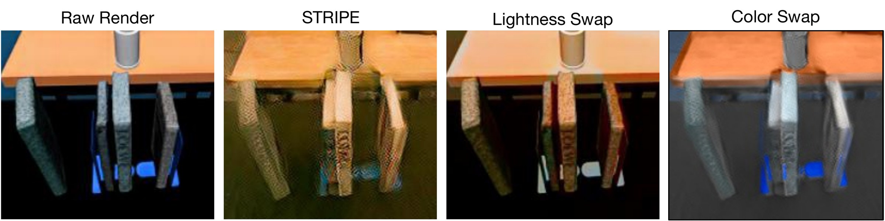

Raw render vs. STRIPE
Drag the handle to compare a raw MuJoCo render with its STRIPE translation. The real camera image of the same moment is shown on the right for reference (held-out frames).
Raw render
STRIPE
We can reduce the cost of evaluating robot policies by leveraging simulation. For this, we present a real-to-sim policy evaluation framework that combines mesh-based scene reconstruction, calibrated robot dynamics, and learned image-to-image translation. We reconstruct the workspace, robot, and manipulated objects in MuJoCo, calibrate robot dynamics against recorded real trajectories, and integrate STRIPE, our Sim-to-real Image Translation for Policy Evaluation model, into the observation pipeline. A single translator shared across tasks and camera views adapts simulation rendered observations to real-camera appearance while preserving the spatial layout of the input image, then provides these observations to the policy during closed-loop evaluation. Across four manipulation tasks and four policy families, our framework with STRIPE achieves stronger aggregate success-rate correlation and policy rank agreement than variants using raw rendering, classical color alignment, or a simpler translation backbone. Adding a Gaussian-splatting background provides no further improvement in policy agreement. These results demonstrate that integrating learned image translation with mesh-based simulation and calibrated dynamics supports real-to-sim policy comparison without requiring photorealistic scene reconstruction. Finally, loss ablations show that closer appearance matching alone does not ensure better policy agreement, highlighting the need to retain task-relevant spatial layout during translation.

The workspace, the robot (from its CAD model), and the manipulated objects are rigid bodies with explicit collision geometry in MuJoCo. Cameras are calibrated to the real side and wrist cameras, and each episode's initial object poses are aligned to the first real frame with a SAM mask overlay.
We replay recorded real actions in simulation and fit per-joint PD stiffness and damping with CMA-ES, minimizing the gap between simulated and real joint trajectories plus a small actuator-effort penalty.
An image2image-turbo translator (frozen SD-Turbo with LoRA adapters) maps every rendered frame to real-camera appearance. One model serves all tasks and both cameras, trained on 1,165 sim/real pairs.
Training pairs are not perfectly aligned in spatial layout. Supervising against the raw render rather than the real image is what keeps STRIPE from drifting objects toward their real-image positions, a failure mode of pixel-supervised baselines like Pix2Pix.
Drag the handle to compare a raw MuJoCo render with its STRIPE translation. The real camera image of the same moment is shown on the right for reference (held-out frames).
STRIPE recovers shading and color while preserving object shapes and positions. Classical Color Alignment leaves the scene flat, and Pix2Pix introduces blur and distorts the spatial layout of the robot and objects.

We train ACT, Diffusion Policy, GR00T N1.5 and π0.5, take four checkpoints of each, and evaluate all 16 checkpoints on four tasks in the real world and in simulation. Agreement is measured with MMRV (mean maximum rank violation, lower is better) and Pearson r (higher is better).

| Place Mug | Pick Shoe | Shelve Book | Pour Liquid | |||||
|---|---|---|---|---|---|---|---|---|
| MMRV↓ | r↑ | MMRV↓ | r↑ | MMRV↓ | r↑ | MMRV↓ | r↑ | |
| Raw Render | 0.519 | 0.450 | 0.400 | 0.510 | 0.350 | 0.606 | 0.619 | 0.168 |
| Classical Color Align. | 0.400 | 0.660 | 0.513 | 0.364 | 0.291 | 0.713 | 0.525 | 0.146 |
| Pix2Pix | 0.519 | 0.280 | 0.253 | 0.737 | 0.556 | 0.305 | 0.322 | 0.668 |
| STRIPE (Ours) | 0.416 | 0.571 | 0.247 | 0.761 | 0.206 | 0.816 | 0.344 | 0.688 |
Per-task policy agreement across 16 checkpoints. Best value in each column in bold.
Each column is a separate closed-loop rollout from the same initial configuration, with the policy acting on that column's observations. Checkpoints are listed below the video. A clip that ends early holds its last frame.
Prior real-to-sim evaluation pipelines rely on Gaussian-splatting backgrounds for realism. With STRIPE in the loop, replacing our mesh-only background with a Gaussian-splatting one does not improve agreement. STRIPE trained on either input recovers similar texture, shading and color, so the extra reconstruction and registration effort can be skipped.
| Method | MMRV↓ | r↑ |
|---|---|---|
| STRIPE w/ GS | 0.125 | 0.906 |
| STRIPE (Ours, mesh only) | 0.112 | 0.916 |

To separate the two visual properties STRIPE changes, we revert one at a time in CIELAB space. Lightness Swap restores the raw render's brightness and collapses to raw-render performance; Color Swap restores the raw render's color and keeps most of the gain. The full translation is still best.
| Method | MMRV↓ | r↑ |
|---|---|---|
| Raw Render | 0.319 | 0.493 |
| Lightness Swap | 0.319 | 0.493 |
| Color Swap | 0.281 | 0.527 |
| STRIPE | 0.231 | 0.554 |

Adding pixel or perceptual reconstruction losses lowers LPIPS (closer appearance to the real image) but reduces J&F (spatial layout preservation) and weakens policy agreement. Neither visual metric alone picks the best translator for evaluation; STRIPE's adversarial + DINOv3 objective does.
| Variant | GAN | DINOv3 | Pixel | LPIPS | LPIPS×10↓ | J&F×10↑ | MMRV↓ | r↑ |
|---|---|---|---|---|---|---|---|---|
| Pix2Pix | 1.0 | 0 | 100 | 0 | 1.7 | 5.5 | 0.250 | 0.522 |
| Turbo-Reconstruction | 0.25 | 0 | 10 | 2 | 1.1 | 6.1 | 0.283 | 0.233 |
| GAN-Only | 0.25 | 0 | 0 | 0 | 1.6 | 7.4 | 0.342 | −0.138 |
| DINO-Only | 0 | 4.0 | 0 | 0 | 5.4 | 9.5 | 0.408 | −0.086 |
| STRIPE + L2 | 0.25 | 4.0 | 10 | 0 | 1.4 | 7.6 | 0.200 | 0.431 |
| STRIPE + LPIPS | 0.25 | 4.0 | 0 | 2 | 1.2 | 6.9 | 0.258 | 0.245 |
| STRIPE (Ours) | 0.25 | 4.0 | 0 | 0 | 1.9 | 8.9 | 0.071 | 0.861 |
Loss and backbone ablations on a subset of task-checkpoint pairs with large real-to-sim gaps. Columns 2 to 5 are loss weights (Pix2Pix uses an ℓ1 pixel term, the others ℓ2). Full table, including Pix2Pix-DINO and STRIPE + Paired, in the paper.
@article{xu2026stripe,
title = {Sim-to-Real Image Translation for Real-to-Sim Policy Evaluation},
author = {Xu, Tongmiao and Patel, Shivansh and Lazebnik, Svetlana},
journal = {arXiv preprint},
year = {2026}
}